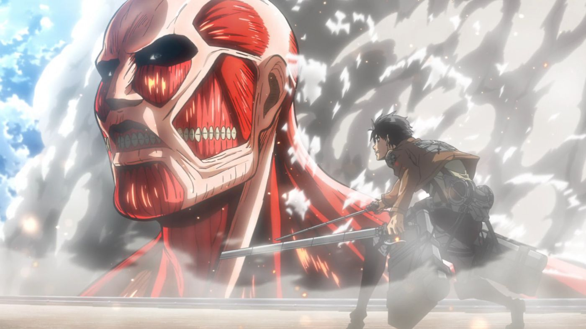
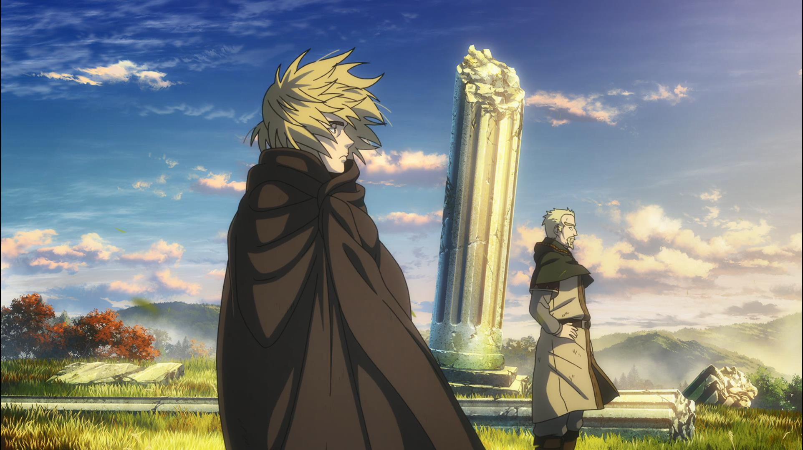

The best Blind Pickable anime:
This category is about the anime that will appeal to the broadest audience, regardless of what kind of shows they watch. The themes of these anime are something anyone can get into, and are the shows I always recommend first whenever I tell someone to watch an anime. Out of all the people I've recommended these to, I have yet to find someone who didn't end up loving them.
Number 1 - Attack on Titan
Arguably the anime that will appeal to the vast majority of people. In Attack on Titan, several hundred years ago, humans were nearly exterminated by titans. Titans are typically several stories tall, seem to have no intelligence, devour human beings and, worst of all, seem to do it for the pleasure rather than as a food source. A small percentage of humanity survived by walling themselves in a city protected by extremely high walls, even taller than the biggest of titans.
Flash forward to the present and the city has not seen a titan in over 100 years. Teenage boy Eren and his foster sister Mikasa witness something horrific as the city walls are destroyed by a colossal titan that appears out of thin air. As the smaller titans flood the city, the two kids watch in horror as their mother is eaten alive. Eren vows that he will murder every single titan and take revenge for all of mankind.
(Source: MangaHelpers, Anilist)
Warning: Attack on Titan can be considered a pretty brutal show to watch, and I would advise against having younger children watch this show without supervision.
Honorable mention - Vinland Saga
If you need a second option for a blind pickable anime, I recommend 'Vinland Saga'. This too is a show I believe anyone could find themselves enjoying. Vinland Saga is pretty similar to Attack on Titan in terms of seriousness and maturity, and both shows have amazingly written characters and a compelling story.
Vinland Saga follows protagonist Thorfinn. Thorfinn is son to one of the Vikings' greatest warriors, but when his father is killed in battle by the mercenary leader Askeladd, he swears to have his revenge. Thorfinn joins Askeladd's band in order to challenge him to a duel, and ends up caught in the middle of a war for the crown of England.
(Source: Kodansha USA, Anilist)
Warning: Vinland Saga can be considered a pretty brutal show to watch, and I would advise against having younger children watch this show without supervision.